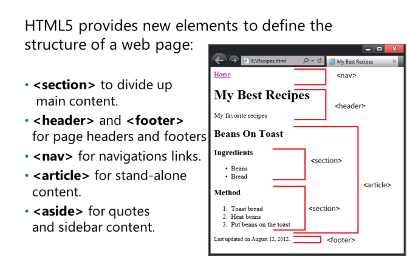

<nav> - identyfikuje zawartość zapewniającą główne sekcje nawigacji strony.
<header> - identyfikuje treść w nagłówku strony. Na przykład strona internetowa firmy może zawierać swoje logo, nazwę i motto w nagłówku.
<article> - identyfikuje samodzielne fragmenty treści, które miałyby sens na zewnątrz kontekstu bieżącej strony. Na przykład post na blogu, przepis lub pozycja katalogu. Często w środku są sekcje
<section> - identyfikuje komponenty treści na stronie.
<aside> - identyfikuje treść związaną z article który nie jest częścią jego głównego przepływu. Na przykład możesz użyć aside do identyfikacji cytatów lub zawartości paska bocznego.
<footer> - identyfikuje zawartość w stopce strony.
<footer> - identyfikuje zawartość w stopce strony.
